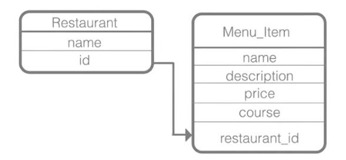

2.0 ORM Fundamentals
ORM stands for Object Relational Mapper. Mappers are responsible for moving data between objects and a database while keeping them independent of each other. As object-oriented programming languages and relational databases structure data on different ways, we need specific code to translate from one schema to the other.
For example, in a programming language like Python, we can create a Product class and an Order class to relate as many instances as needed from one class to another. Though, on relational databases, we need three entities (tables), one to persist products, another one to persist orders, and a third one to relate (through foreign key) products and orders.
SQLAlchemy ORM is an excellent Data Mapper solution to translate Python classes into/from tables and to move data between instances of these classes and rows of these tables. Basically:
- Python Class == SQL Table
- Instance of the Class == Row in the Table
With SQLAlchemy, we can write a single Python file to setup and configure a database. We can call this file db_setup.py. Creating a database with SQLAlchemy has 4 major components:
- Configuration: This is used to import all the necessary modules.
- Class: Used to represent the database table as Python classes. Inside the class declaration we will have the Table and Mapper code.
- Table: Represents the specific table in our database.
- Mapper: Connects the columns of our table to the Python objects that represent it.
In the below example, we are creating a restaurant database which has 2 tables: below is the schema:

2.1 SQLEngine
We connect to a database by creating a SQLEngine object, which knows how to talk to one particular type of database (SQLite, PostgreSQL, Firebird, MySQL, Oracle...). The SQLEngine object also doubles as a connection object. Behind the scenes, it will create a pool of database connections and re-use them automatically as needed, to keep your application running quickly. The call to create_engine doesn't actually connect to the database right away, it just prepares for when it does need to connect (for example, creating a table or making a query):
from sqlalchemy import create_engine
engine = create_engine('sqlite:///dbname.db')
2.2 Declarative
When using the ORM, the configurational process starts by:
- Describing the database tables we’ll be dealing with,
- After that we define our own classes which will be mapped to those tables.
In SQLAlchemy, these two tasks are usually performed together, using a system known as Declarative, which allows us to create classes that include directives to describe the actual database table they will be mapped to, i.e. instead of having to write code for Table, mapper and the class object at different places, SQLAlchemy's declarative allows a table, a mapper and a class object to be defined at once in one class definition.
Classes mapped using the Declarative system are defined in terms of a base class which maintains a catalog of classes and tables relative to that base - this is known as the declarative base class. Our application will usually have just one instance of this base in a commonly imported module. We create the base class using the declarative_base() function, as shown below. The declarative_base() callable returns a new Base class from which all mapped classes should inherit. Now that we have a “base”, we can define any number of mapped classes in terms of it.
from sqlalchemy.ext.declarative import declarative_base
Base = declarative_base()
In the below code snippet, we are creating the Restaurant and MenuItem classes:
class Restaurant(Base):
__tablename__ = 'restaurant'
name = Column(String(80),nullable=False)
id = Column(Integer, primary_key=True)
class MenuItem(Base):
__tablename__ = 'menu_item'
name = Column(String(80),nullable=False)
id = Column(Integer, primary_key=True)
course = Column(String(250))
description = Column(String(250))
price = Column(String(8))
restaurant_id = Column(Integer,ForeignKey('restaurant.id'))
restaurant = relationship(Restaurant)
A class using Declarative at a minimum needs a __tablename__ attribute, and at least one Column which is part of a primary key.
In the Restaurant class:
- The
__tablename__ property tells SQLAlchemy that rows of the restaurant table must be mapped to the Restaurant class.
- The
id property identifies that this is the primary_key in the table and that its type is Integer
The name property indicates that its a string (upto 80 characters long) and cannot be a null value.
Note: The Column objects are automatically named with the name of the attribute to which they are assigned. To name columns explicitly with a name distinct from their mapped attribute, just give the column a name. Below, column “some_table_id” is mapped to the “id” attribute of SomeClass, but in SQL will be represented as “some_table_id”:
class SomeClass(Base):
__table__name = 'some_table
id = Column("some_table_id", Integer, primary_key=True)
The MenuItem class, introduces the ForeignKey construct, which is a directive applied to Column that indicates that values in this column should be constrained to be values present in the named remote column.
A second directive, known as relationship(), tells the ORM that MenuItem should be linked to the Restaurant class using the attribute MenuItem.restaurant. The relationship() directive uses the foreign key relationships between the two tables to determine the nature of this linkage, determining that MenuItem.restaurant will be many to one.
With our Restaurant and MenuItem classes constructed via the Declarative system, we have defined information about our table, known as table metadata. The object used by SQLAlchemy to represent this information for a specific table is called the Table object, and here Declarative has made one for us. In the Python REPL, you can view this metadata using Restaurant.__table__ for example.
Below code block is the complete database setup file, which when executed creates an empty database with the tables we have specified.
import sys
from sqlalchemy import Column, ForeignKey, Integer, String
from sqlalchemy.ext.declarative import declarative_base
from sqlalchemy.orm import relationship
from sqlalchemy import create_engine
Base = declarative_base()
class Restaurant(Base):
__tablename__ = 'restaurant'
name = Column(String(80),nullable=False)
id = Column(Integer, primary_key=True)
class MenuItem(Base):
__tablename__ = 'menu_item'
name = Column(String(80),nullable=False)
id = Column(Integer, primary_key=True)
course = Column(String(250))
description = Column(String(250))
price = Column(String(8))
restaurant_id = Column(Integer,ForeignKey('restaurant.id'))
restaurant = relationship(Restaurant)
engine = create_engine('sqlite:///restaurant_menu.db')
Base.metadata.create_all(engine)
Once we execute the above file, we will have a restaurant_menu.db file created, which is our empty database. In the next sections, we will see how to start populating it.
2.3 Sessions
The ORM’s “handle” to the database is the Session. Sessions, on SQLAlchemy ORM, are the implementation of the Unit of Work design pattern. A Unit of Work is used to maintain a list of objects affected by a business transaction and to coordinate the writing out of these changes. This means that all modifications tracked by Sessions (Units of Works) will be applied to the underlying database together, or none of them will. In other words, Sessions are used to guarantee the database consistency. Below is the code to create a session in SQLAlchemy:
from sqlalchemy.orm import sessionmaker
DBSession = sessionmaker(bind=engine)
dbsession = DBSession()
A DBSession() instance establishes all conversations with the database and represents a "staging zone" for all the objects loaded into the database session object. Any change made against the objects in the session won't be persisted into the database until you call session.commit().
3.1 Create
>>>> from sqlalchemy import create_engine
>>>> from sqlalchemy.orm import sessionmaker
>>>> from db_setup import Base, Restaurant, MenuItem
>>>> engine = create_engine('sqlite:///restaurant_menu.db')
>>>> Base.metadata.bind = engine
>>>> DBSession = sessionmaker(bind = engine)
>>>> session = DBSession()
>>>> myFirstRestaurant = Restaurant(name = "Happy Platter")
>>>> session.add(myFirstRestaurant)
>>>> session.commit()
>>>> session.query(Restaurant).all()
[<db_setup.Restaurant object at 0x8fd740c>]
>>>>cheesepizza = MenuItem(name = "Cheese Pizza", description = "Made with fresh ingredients", course="Entree", price="$8.99",restaurant=myFirstRestaurant)
>>>>session.add(cheesepizza)
>>>> session.commit()
3.2 Read
Querying is done using the .query() method : session.query(ClassName).filter_by(attribute = value). We can then use .one(), .first(), .all() to return exactly one, first result or all results as shown below. Once we get the query result, we can use the dot notation to access the attributes, as shown in line 4.
>>>> firstResult = session.query(Restaurant).first()
>>>> firstResult.name
u 'Happy Platter'
>>>>
We can create a variable and store the results of `session.query(Restaurant).all()` - we can then use a for loop to iterate through the values.
3.3 Update
veggieBurgers = session.query(MenuItem).filter_by(name='Veggie Burger')
UrbanVeggieBurger = session.query(MenuItem).filter_by(id=8).one()
UrbanVeggieBurger.price = '$2.99'
session.add(UrbanVeggieBurger)
session.commit()
3.4 Delete
>>>> spinach = session.query(MenuItem).filter_by(name='Spinach Ice Cream').one()
>>>> session.delete(spinach)
>>>> session.commit()